pacman::p_load(tidyverse,DT,tseries,lubridate,knitr,tsibble,fable,feasts,ggthemes, forecast,urca)Take-Home Exercise 3.b: Shiny App Prototype - Forecasting
1 The Task
In this take-home exercise, you are required to select one of the module of your proposed Shiny application and complete the following tasks:
- To evaluate and determine the necessary R packages needed for your Shiny application are supported in R CRAN,
- To prepare and test the specific R codes can be run and returned the correct output as expected,
- To determine the parameters and outputs that will be exposed on the Shiny applications, and
- To select the appropriate Shiny UI components for exposing the parameters determine above.
2 Getting Started
Our group project focuses on Singapore’s weather, and we aim to provide an interactive weather dashboard where users can explore and gain a deeper understanding of Singapore’s weather trends.
I will be working on two modules: EDA - Geospatial Analysis (Isohyet Map) and Forecasting.
For a better understanding of these modules, please refer to our project proposal: Wheather or Not – Predicting the Unpredictable
2.1 Load Packages
Below are the packages I’ll be using for testing and building the prototypes:
| Package | Description |
|---|---|
| tidyverse | For data manipulation |
| DT | For interactive data tables |
| knitr | For dynamic report generation with R |
| lubridate | For handling date-time data |
| tsibble | For tidy temporal data with wrangling tools |
| feasts | For analysing tidy time series data with decomposition methods (STL), statistical summaries and graphics functions(cycle plot) |
| fable | Forecasting models for tidy time series data |
| urca | For co-integration analysis (Engle-Granger and Johansen tests) |
| forecast | For displaying and analysing univariate time series forecasts |
2.2 Import and Prepare Weather Data
daily_station <- read_rds("data/station_daily_data.rds")
weekly_station <- read_rds("data/station_weekly_data.rds")
monthly_station <- read_rds("data/station_monthly_data.rds")2.2.1 Review the data structure
The data is pre-processed in last take-home exercise (Ex3.a)
str(daily_station)tibble [20,007 × 15] (S3: tbl_df/tbl/data.frame)
$ station : Factor w/ 10 levels "Admiralty","Ang Mo Kio",..: 9 9 9 9 9 9 9 9 9 9 ...
$ year : num [1:20007] 2019 2019 2019 2019 2019 ...
$ month : num [1:20007] 1 1 1 1 1 1 1 1 1 1 ...
$ day : num [1:20007] 1 2 3 4 5 6 7 8 9 10 ...
$ daily_rainfall_total_mm : num [1:20007] 0 0 0 0 6.2 0 0 14.9 0 0 ...
$ highest_30_min_rainfall_mm : num [1:20007] 0 0 0 0 0 0 0 0 0 0 ...
$ highest_60_min_rainfall_mm : num [1:20007] 0 0 0 0 0 0 0 0 0 0 ...
$ highest_120_min_rainfall_mm: num [1:20007] 0 0 0 0 0 0 0 0 0 0 ...
$ mean_temperature_c : num [1:20007] 29.5 30 30.3 30.4 29 29.1 29.4 28.6 29.1 29.2 ...
$ maximum_temperature_c : num [1:20007] 34.2 33.8 33.1 33.5 34 32.7 33.1 31.6 32.7 33 ...
$ minimum_temperature_c : num [1:20007] 26.1 25.8 26.7 26.9 26 26.2 26 26 25.8 25.3 ...
$ mean_wind_speed_km_h : num [1:20007] 11.9 13 15.8 11.2 7.2 15.8 16.6 12.6 16.9 16.6 ...
$ max_wind_speed_km_h : num [1:20007] 42.5 46.4 48.2 35.3 31.3 38.9 42.5 33.5 42.5 42.5 ...
$ date : Date[1:20007], format: "2019-01-01" "2019-01-02" ...
$ week_no : num [1:20007] 1 1 1 1 1 1 1 2 2 2 ...3 Time Series Decomposition & Correlograms
3.1 Preparing data
To create time-series decomposition plots and correlograms, we need to transform the data frame into tsibble using as_tsibble of tsibble package:
- year-month and year_week is created by
yearmonth()andyearweek()of tsibble package
# Simulate User Settings
time_resolution_input <- "weekly"
start_date <- as.Date("2019-01-11")
end_date <- as.Date("2024-2-13")
variable <- "mean_temperature_c"
station_name <- "Clementi"
ts_daily_tsibble <- daily_station %>%
filter(station == station_name,
date >= start_date,
date <= end_date) %>%
group_by(date) %>%
select(date, variable) %>%
pivot_longer(cols = c(mean_temperature_c),
names_to = "type", values_to = "value") %>%
as_tsibble(index = date, key = type)
# Aggregate to weekly data
ts_weekly_tsibble <- ts_daily_tsibble %>%
mutate(year_week = yearweek(date)) %>%
group_by(type, year_week) %>%
summarise(value = mean(value, na.rm = TRUE), .groups = "drop") %>%
distinct(type, year_week, .keep_all = TRUE) %>%
as_tsibble(index = year_week, key = type)
# Aggregate to monthly data
ts_monthly_tsibble <- ts_daily_tsibble %>%
mutate(year_month = yearmonth(date)) %>%
group_by(type, year_month) %>%
summarise(value = mean(value, na.rm = TRUE), .groups = "drop") %>%
distinct(type, year_month, .keep_all = TRUE) %>%
as_tsibble(index = year_month, key = type)3.2 Time Series Decomposition - STL & Classical
To understand the different patterns in weather data, we use STL and classical time series decomposition. These methods decompose the data into trend, seasonality, and remainder, providing deeper insights into the data that can be applied to ETS models.
For example, if STL shows a strong trend but little yearly pattern, we know the climate change matter more than seasons for our predictions.
3.2.1 STL (Seasonal and Trend decomposition using Loess)
STL is a more flexible and robust decomposition method, based on local regression (Loess). It can handle non-linear trends and changing seasonal patterns (which classical decomposition cannot) more effectively than classical decomposition.
- The grey bars to the left of each panel show the relative scales of the components.
Let’s assume the user input settings are:
start_date <- as.Date("2019-01-11")
end_date <- as.Date("2024-2-13")
variable <- "mean_temperature_c"
station_name <- "Clementi"time_resolution_input <- "daily"
time_resolution_table <- switch(time_resolution_input,
daily = ts_daily_tsibble,
weekly = ts_weekly_tsibble,
monthly = ts_monthly_tsibble)
time_resolution_table %>%
model(stl = STL(value)) %>%
components() %>%
autoplot() +
theme_minimal() +
theme(
plot.title = element_text(hjust = 0.5, face = 'bold'),
plot.subtitle = element_text(hjust = 0.5),
axis.title = element_text(size = 8),
legend.position = 'top',
legend.background = element_blank(),
legend.key = element_blank(),
panel.background = element_rect(fill = "#f3f1e9", color = NA),
plot.background = element_rect(fill = "#f3f1e9", color = NA))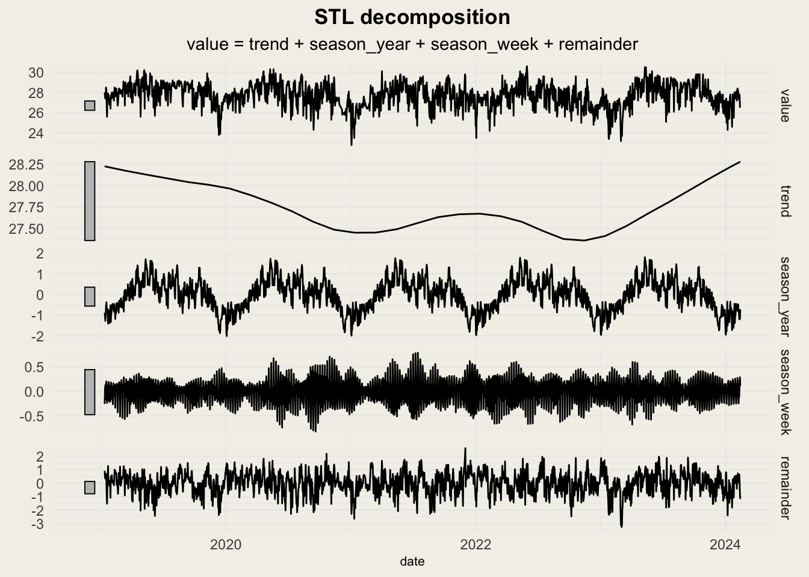
time_resolution_input <- "weekly"
time_resolution_table <- switch(time_resolution_input,
daily = ts_daily_tsibble,
weekly = ts_weekly_tsibble,
monthly = ts_monthly_tsibble)
time_resolution_table %>%
model(stl = STL(value)) %>%
components() %>%
autoplot() +
theme_minimal() +
theme(
plot.title = element_text(hjust = 0.5, face = 'bold'),
plot.subtitle = element_text(hjust = 0.5),
axis.title = element_text(size = 8),
legend.position = 'top',
legend.background = element_blank(),
legend.key = element_blank(),
panel.background = element_rect(fill = "#f3f1e9", color = NA),
plot.background = element_rect(fill = "#f3f1e9", color = NA))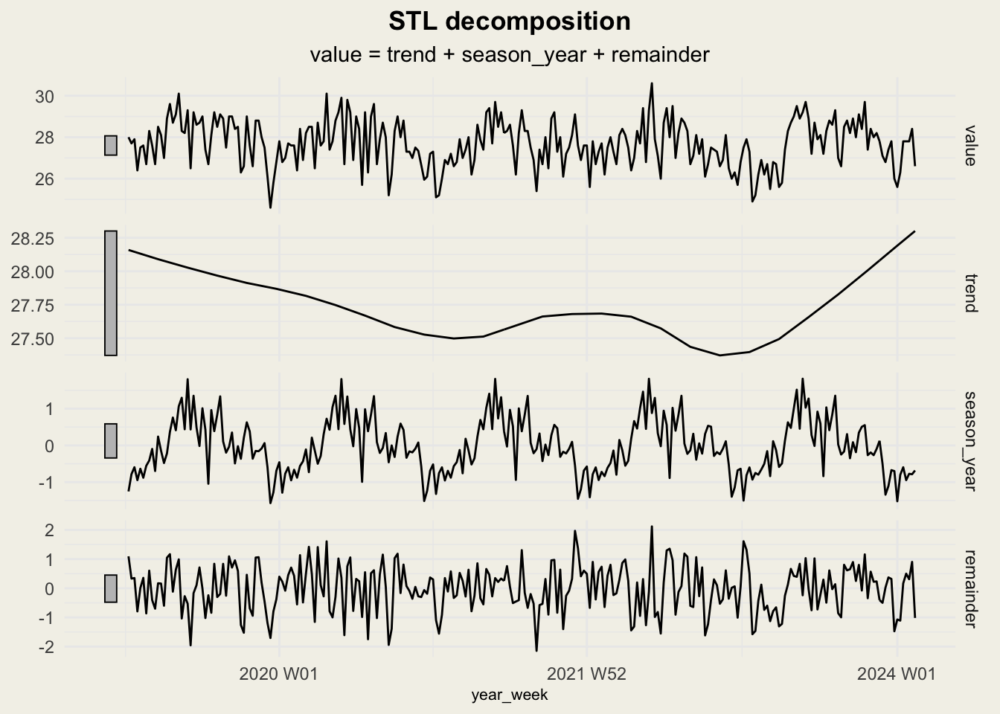
time_resolution_input <- "monthly"
time_resolution_table <- switch(time_resolution_input,
daily = ts_daily_tsibble,
weekly = ts_weekly_tsibble,
monthly = ts_monthly_tsibble)
time_resolution_table %>%
model(stl = STL(value)) %>%
components() %>%
autoplot() +
theme_minimal() +
theme(
plot.title = element_text(hjust = 0.5, face = 'bold'),
plot.subtitle = element_text(hjust = 0.5),
axis.title = element_text(size = 8),
legend.position = 'top',
legend.background = element_blank(),
legend.key = element_blank(),
panel.background = element_rect(fill = "#f3f1e9", color = NA),
plot.background = element_rect(fill = "#f3f1e9", color = NA))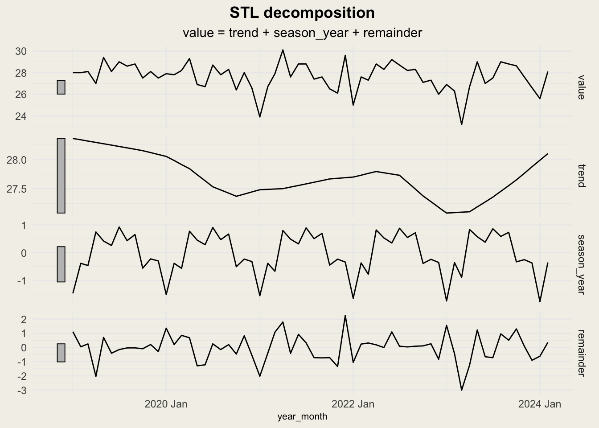
Observation
From the plot below, we can observe:
Trend:
a clear long-term pattern showing a U-shaped trend (temperatures declined from 2020 until around mid-2021 to 2022 then they began rising again toward 2024)
a multi-year cycle rather than a linear warming or cooling trend
The grey bar is quite small, indicating that the trend component contributes a relatively small amount to the overall variation.
Seasonal:
a clear annual seasonal pattern (warmer during Apr-Aug and cooler during Dec-Jan) that repeats consistently each year
The seasonal pattern has the second largest effect
Residual:
This represents weather noise and fluctuations that aren’t explained by the seasonal patterns or long-term trends
The fluctuations is between -3~+2 celcius degree, having the largest effect
Conclusion:
An ARIMA model may perform better than ETS due to the large proportion of residuals….
3.3 Time Series Decomposition - Classical >> removed
Classical decomposition uses additive or multiplicative models to decompose a time series. The trend is typically done using moving averages (like a centered moving average) to smooth the data and extract the trend component. It assumes that the seasonality and trend are linear and that seasonality is constant over time.
Compared to STL, classical decomposition performs poorly in capturing the detailed fluctuations in seasonality. Hence, we may not put classical decomposition in our Shiny APP.
The classical decomposition cannot detect well on seasonal cycle on daily mean_temperature data.
time_resolution_input <- "daily"
time_resolution_table <- switch(time_resolution_input,
daily = ts_daily_tsibble,
weekly = ts_weekly_tsibble,
monthly = ts_monthly_tsibble)
time_resolution_table %>%
model(
classical_decomposition(
value, type = "additive")) %>%
components() %>%
autoplot()+
theme_minimal() +
theme(
plot.title = element_text(hjust = 0.5, face = 'bold'),
plot.subtitle = element_text(hjust = 0.5),
axis.title = element_text(size = 8),
legend.position = 'top',
legend.background = element_blank(),
legend.key = element_blank()
)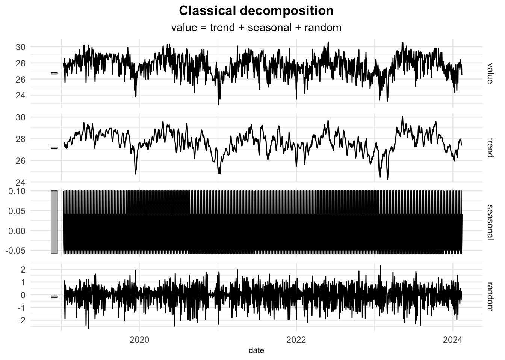
time_resolution_input <- "weekly"
time_resolution_table <- switch(time_resolution_input,
daily = ts_daily_tsibble,
weekly = ts_weekly_tsibble,
monthly = ts_monthly_tsibble)
time_resolution_table %>%
model(
classical_decomposition(
value, type = "additive")) %>%
components() %>%
autoplot()+
theme_minimal() +
theme(
plot.title = element_text(hjust = 0.5, face = 'bold'),
plot.subtitle = element_text(hjust = 0.5),
axis.title = element_text(size = 8),
legend.position = 'top',
legend.background = element_blank(),
legend.key = element_blank(),
panel.background = element_rect(fill = "#f3f1e9", color = NA),
plot.background = element_rect(fill = "#f3f1e9", color = NA)
)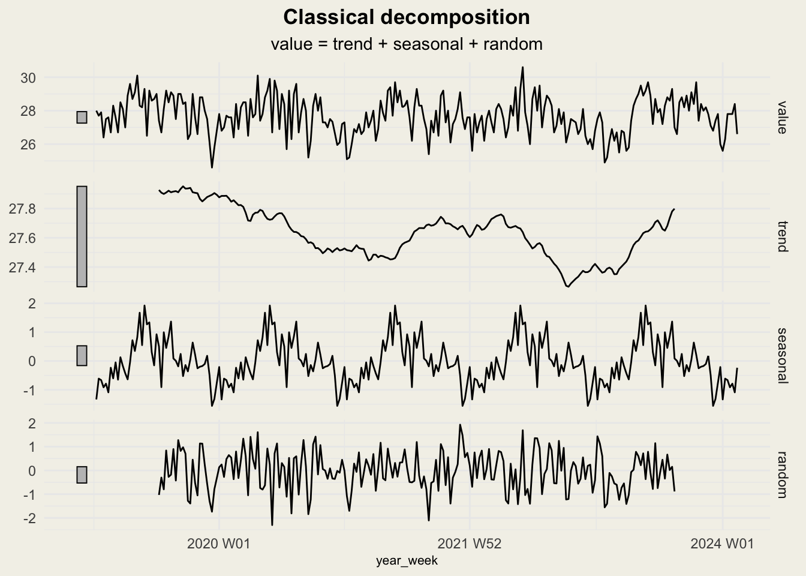
time_resolution_input <- "monthly"
time_resolution_table <- switch(time_resolution_input,
daily = ts_daily_tsibble,
weekly = ts_weekly_tsibble,
monthly = ts_monthly_tsibble)
time_resolution_table %>%
model(
classical_decomposition(
value, type = "additive")) %>%
components() %>%
autoplot()+
theme_minimal() +
theme(
plot.title = element_text(hjust = 0.5, face = 'bold'),
plot.subtitle = element_text(hjust = 0.5),
axis.title = element_text(size = 8),
legend.position = 'top',
legend.background = element_blank(),
legend.key = element_blank(),
panel.background = element_rect(fill = "#f3f1e9", color = NA),
plot.background = element_rect(fill = "#f3f1e9", color = NA)
)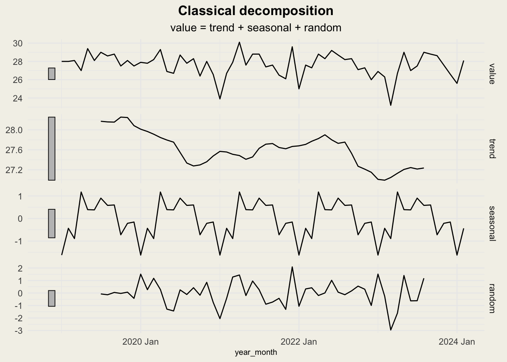
3.4 Time Series Decomposition - Seasonal subseries plot
ts_monthly_tsibble %>%
gg_subseries(value)+
labs(title="Cycle Plot")+
theme_minimal()+
theme(
plot.title = element_text(hjust = 0.5, face = 'bold'),
plot.subtitle = element_text(hjust = 0.5),
axis.title = element_text(size = 8),
axis.text.x = element_text(angle=90)
)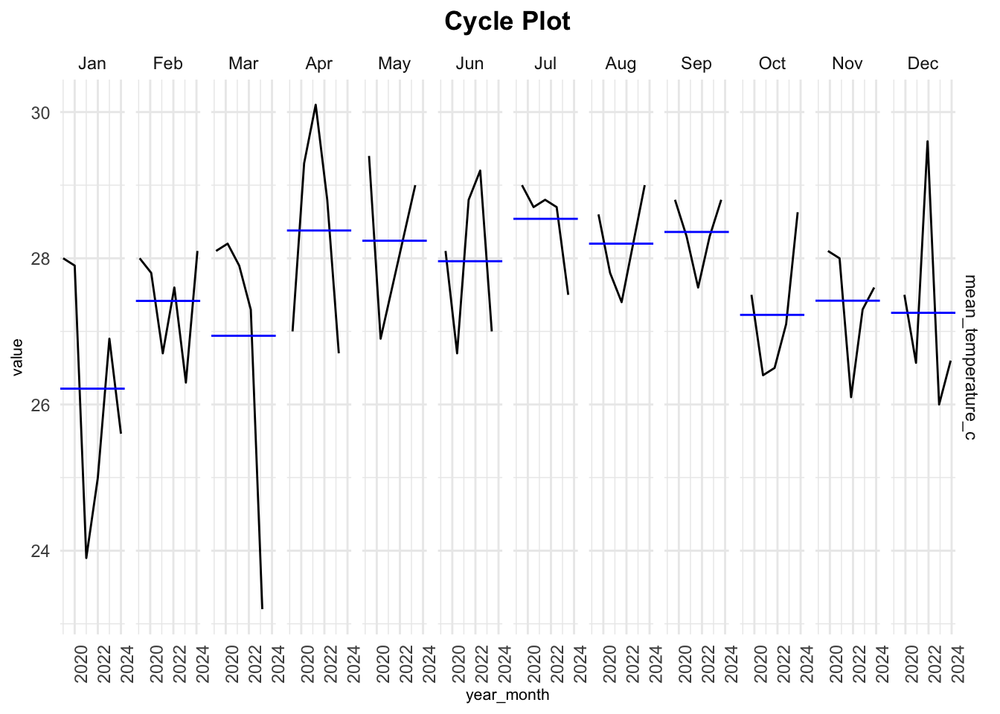
3.5 Correlograms - ACF & PACF
ACF and PACF plots will be displayed for users to check whether the data exhibit autocorrelation or partial autocorrelation:
The PACF helps determine the “AR” (autoregressive) order : how many past values directly influence the current value.
The ACF helps determine the “MA” (moving average) order : how past random shocks continue to influence the current value.
For example, if the correlograms show strong connections at lag 1 (1 day) and lag 7 (7 days), we can infer that today’s temperature is strongly related to yesterday’s temperature and the temperature from exactly one week ago.
3.5.1 ACF and PACF
Both plots show weak seasonality, with only the ACF showing a strong correlation at lag 6.
lag_input <- 24
time_resolution_input <- "monthly"
time_resolution_table <- switch(time_resolution_input,
daily = ts_daily_tsibble,
weekly = ts_weekly_tsibble,
monthly = ts_monthly_tsibble)
time_resolution_table %>%
gg_tsdisplay(
plot_type='partial',lag_max = lag_input)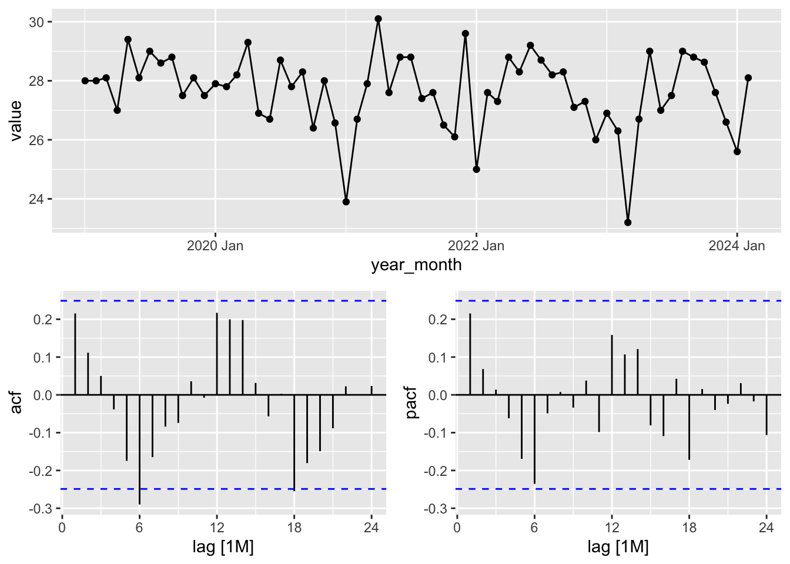
library(urca)
adf_test <- ur.df(time_resolution_table$value, type = "drift", selectlags = "AIC")
summary(adf_test)
###############################################
# Augmented Dickey-Fuller Test Unit Root Test #
###############################################
Test regression drift
Call:
lm(formula = z.diff ~ z.lag.1 + 1 + z.diff.lag)
Residuals:
Min 1Q Median 3Q Max
-4.1191 -0.7198 0.1387 0.7525 2.4764
Coefficients:
Estimate Std. Error t value Pr(>|t|)
(Intercept) 20.20079 4.60506 4.387 5.03e-05 ***
z.lag.1 -0.73094 0.16639 -4.393 4.92e-05 ***
z.diff.lag -0.07004 0.13552 -0.517 0.607
---
Signif. codes: 0 '***' 0.001 '**' 0.01 '*' 0.05 '.' 0.1 ' ' 1
Residual standard error: 1.288 on 57 degrees of freedom
Multiple R-squared: 0.3952, Adjusted R-squared: 0.374
F-statistic: 18.62 on 2 and 57 DF, p-value: 5.965e-07
Value of test-statistic is: -4.393 9.6541
Critical values for test statistics:
1pct 5pct 10pct
tau2 -3.51 -2.89 -2.58
phi1 6.70 4.71 3.863.5.2 Trend differencing
difference(value, lag = 1): Computes the first difference of the time series. This transformation helps remove trends and make the series stationary by calculating the change between consecutive values
time_resolution_input <- "monthly"
time_resolution_table <- switch(time_resolution_input,
daily = ts_daily_tsibble,
weekly = ts_weekly_tsibble,
monthly = ts_monthly_tsibble)
time_resolution_table %>%
gg_tsdisplay(difference(
value,
lag = 1),
plot_type='partial',
lag_max = lag_input
)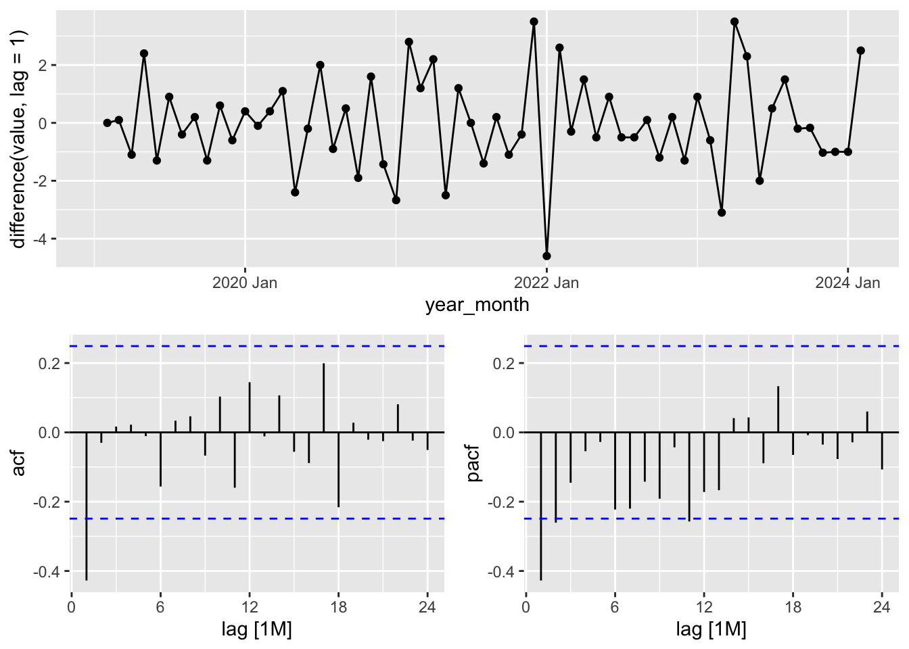
Observation
After removing trend, the model become strong at lag 1, with acf surgely cut-off after lag 1 and pacf decaying after lag 1:
A strong spike at lag 1, followed by decay in the PACF, suggesting that the data follows an auto regressive process.
ACF shows a sharp drop after lag 1, pointing to a pure AR process, where only the previous value directly influences the current value
Based on observation, ARIMA(1,0,0) is more suitable.
3.5.3 Seasonal differencing
This removes seasonal trends and lets ACF/PACF highlight remaining correlations.
time_resolution_table %>%
gg_tsdisplay(difference(value, difference = 12),
plot_type = "partial",
lag_max = lag_input)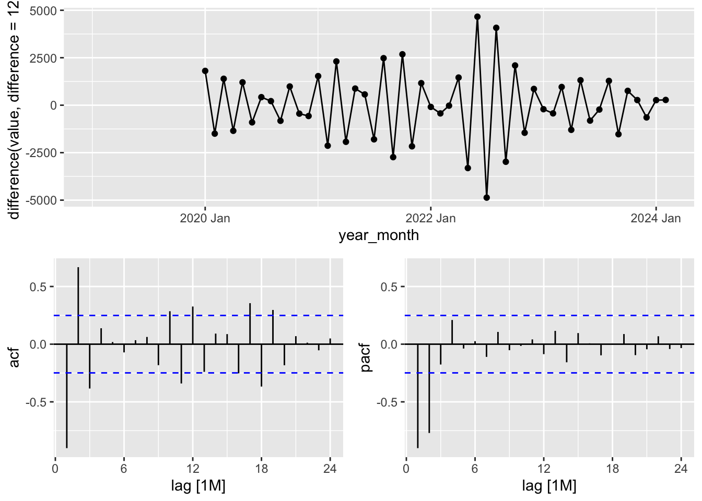
3.6 Univariate Forecasting Model
3.6.1 Simulate user input data
time_resolution_input <- "weekly"
start_date <- as.Date("2022-01-01")
end_date <- as.Date("2025-2-01")
variable <- "mean_temperature_c"
station_name <- "Clementi"
ts_daily_tsibble <- daily_station %>%
filter(station == station_name,
date >= start_date,
date <= end_date) %>%
group_by(date) %>%
select(date, variable) %>%
pivot_longer(cols = c(mean_temperature_c),
names_to = "type", values_to = "value") %>%
as_tsibble(index = date, key = type)
# Aggregate to weekly data
ts_weekly_tsibble <- ts_daily_tsibble %>%
mutate(year_week = yearweek(date)) %>%
group_by(type, year_week) %>%
summarise(value = mean(value, na.rm = TRUE), .groups = "drop") %>%
distinct(type, year_week, .keep_all = TRUE) %>%
as_tsibble(index = year_week, key = type)
# Aggregate to monthly data
ts_monthly_tsibble <- ts_daily_tsibble %>%
mutate(year_month = yearmonth(date)) %>%
group_by(type, year_month) %>%
summarise(value = mean(value, na.rm = TRUE), .groups = "drop") %>%
distinct(type, year_month, .keep_all = TRUE) %>%
as_tsibble(index = year_month, key = type)3.6.2 Train-test split (80%/20%)
time_resolution_input <- "monthly"
time_resolution_table <- switch(time_resolution_input,
daily = ts_daily_tsibble,
weekly = ts_weekly_tsibble,
monthly = ts_monthly_tsibble)
cutoff_row <- floor(0.8 * nrow(time_resolution_table))
forecasting <- time_resolution_table %>%
mutate(split = if_else(row_number() > cutoff_row, "Hold-out", "Training"))
forecasting_train <- forecasting %>%
filter(split=="Training")
forecasting_test <- forecasting %>%
filter(split=="Hold-out")3.6.3 Model Selection & Comparison
The following models will be available for forecasting. For ARIMA, the user needs to specify the values for AR (AutoRegressive), I (Integrated), and MA (Moving Average). However, this may lead to errors if the model is not set up correctly. To prevent such issues, only Auto-ARIMA will be offered to users:
models <- list(
ETS_AAA = ETS(value ~ error("A") + trend("A") + season("A")),
ETS_MAM = ETS(value ~ error("M") + trend("A") + season("M")),
ETS_MMM = ETS(value ~ error("M") + trend("M") + season("M")),
ETS_AAN = ETS(value ~ error("A") + trend("A") + season("N")),
ETS_MMN = ETS(value ~ error("M") + trend("M") + season("N")),
ETS_ANN = ETS(value ~ error("A") + trend("N") + season("N")),
Auto_ETS = ETS(value),
Auto_ARIMA = ARIMA(value)
)
# User-selected models
model_chosen <- c("ETS_AAN","ETS_MMM", "Auto_ARIMA")
models_to_fit <- models[model_chosen]
fit_models <- forecasting_train %>%
model(!!!models_to_fit)The code below displays the matrices of trained models to help the user choose the best model for forecasting. The Auto-ARIMA model demonstrates the lowest AIC and BIC values.
matrix <- glance(fit_models)
matrix <- matrix %>%
select(.model, AIC, AICc, BIC)
matrix# A tibble: 3 × 4
.model AIC AICc BIC
<chr> <dbl> <dbl> <dbl>
1 ETS_AAN 126. 129. 133.
2 ETS_MMM 145. 201. 168.
3 Auto_ARIMA 71.0 71.8 72.6Next, we fit the test data and visualize the test results:
forecast_results <- fit_models %>%
forecast(h = nrow(forecasting_test)) # Plot the forecast
autoplot(forecast_results, level = c(95)) +
autolayer(forecasting, series = "Actual", color = "#4D4D4D") +
labs(title = "Forecasting Performance: ETS Model vs Actual Test Data",
y = "Value",
x = "") +
theme_classic()+
theme(
plot.title = element_text(face = "bold", hjust = 0.5,color="#4D4D4D"),
axis.line.y = element_blank(),
axis.line.x = element_line(color = "#4D4D4D", size = 0.5),
axis.title.y = element_text(color = "#4D4D4D",margin = margin(r = 10)),
legend.position = "bottom",
legend.key = element_blank(),
legend.key.size = unit(0.2, "cm"),
legend.title = element_text(size = 9),
legend.text = element_text(size = 8)
)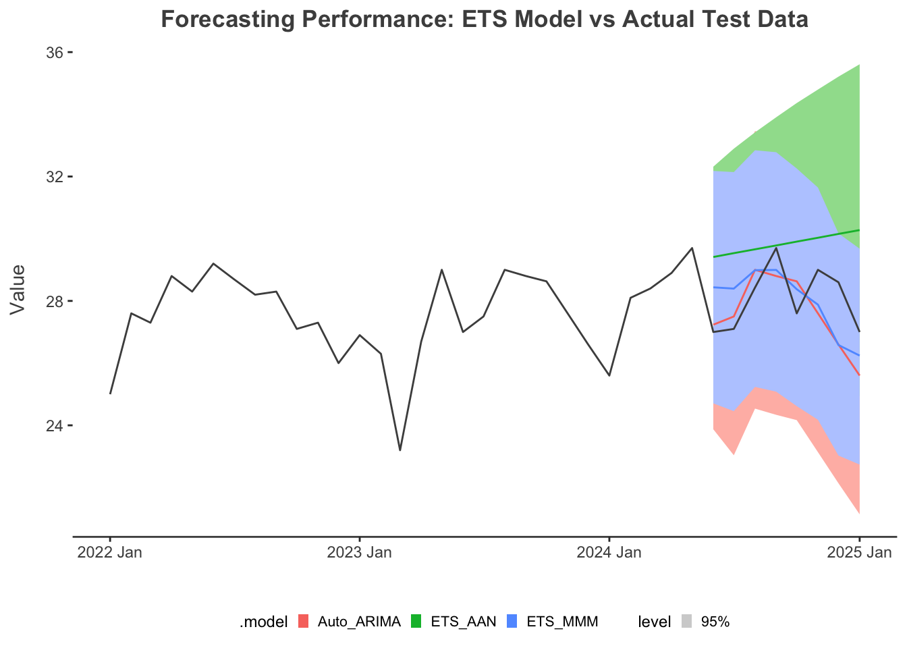
The code below compare the test accuracy between chosen models. ETS_MMM shows the lowest RMSE:
acc <- accuracy(forecast_results, forecasting_test)
acc <- acc %>%
select(.model,RMSE)
acc# A tibble: 3 × 2
.model RMSE
<chr> <dbl>
1 Auto_ARIMA 1.14
2 ETS_AAN 2.03
3 ETS_MMM 1.183.6.3.1 Combine Test Accuracy with Training AIC & BIC
The test RMSE, along with the training AIC and BIC, are combined for efficient reference by the user.
- tr stands for train, ts stands for test
model_matrix <- matrix %>%
left_join(acc, by=".model") %>%
rename(RMSE_ts = RMSE, AIC_tr = AIC, AICc_tr = AICc, BIC_tr = BIC)
model_matrix# A tibble: 3 × 5
.model AIC_tr AICc_tr BIC_tr RMSE_ts
<chr> <dbl> <dbl> <dbl> <dbl>
1 ETS_AAN 126. 129. 133. 2.03
2 ETS_MMM 145. 201. 168. 1.18
3 Auto_ARIMA 71.0 71.8 72.6 1.143.6.3.2 Table: Actual and Forecasted Values Comparison
comparison_table_test <- forecast_results %>%
select(year_month, .model, value, .mean) %>%
rename(Actual = value, `Forecasted Value` = .mean)
comparison_table_test <- comparison_table_test %>%
select(year_month, .model,`Forecasted Value`) %>%
rename( Model = .model)
comparison_table_test <-
left_join(comparison_table_test,forecasting,by="year_month")%>%
select(year_month, Model, `Forecasted Value`, value) %>%
rename(`Year Month` = `year_month`, `Actual Value` = value) %>%
mutate(`Forecasted Value` = round(`Forecasted Value`,2))
kable(comparison_table_test)| Year Month | Model | Forecasted Value | Actual Value |
|---|---|---|---|
| 2024 Jun | Auto_ARIMA | 27.24 | 27.00 |
| 2024 Jul | Auto_ARIMA | 27.50 | 27.10 |
| 2024 Aug | Auto_ARIMA | 29.00 | 28.43 |
| 2024 Sep | Auto_ARIMA | 28.80 | 29.70 |
| 2024 Oct | Auto_ARIMA | 28.63 | 27.60 |
| 2024 Nov | Auto_ARIMA | 27.60 | 29.00 |
| 2024 Dec | Auto_ARIMA | 26.60 | 28.60 |
| 2025 Jan | Auto_ARIMA | 25.60 | 27.00 |
| 2024 Jun | ETS_AAN | 29.41 | 27.00 |
| 2024 Jul | ETS_AAN | 29.54 | 27.10 |
| 2024 Aug | ETS_AAN | 29.66 | 28.43 |
| 2024 Sep | ETS_AAN | 29.78 | 29.70 |
| 2024 Oct | ETS_AAN | 29.91 | 27.60 |
| 2024 Nov | ETS_AAN | 30.03 | 29.00 |
| 2024 Dec | ETS_AAN | 30.15 | 28.60 |
| 2025 Jan | ETS_AAN | 30.28 | 27.00 |
| 2024 Jun | ETS_MMM | 28.44 | 27.00 |
| 2024 Jul | ETS_MMM | 28.40 | 27.10 |
| 2024 Aug | ETS_MMM | 28.99 | 28.43 |
| 2024 Sep | ETS_MMM | 29.00 | 29.70 |
| 2024 Oct | ETS_MMM | 28.38 | 27.60 |
| 2024 Nov | ETS_MMM | 27.88 | 29.00 |
| 2024 Dec | ETS_MMM | 26.58 | 28.60 |
| 2025 Jan | ETS_MMM | 26.24 | 27.00 |
3.6.4 Select Best model for forecasting
forecast_period <- 12
# User-selected final forecasting model
model_chosen <- c("ETS_MMM", "Auto_ARIMA")
forecasting_models <- models[model_chosen]
# Applying to forecasting pipeline
fit_chosen_model <- forecasting %>%
model(!!!forecasting_models)
forecast_results <- fit_chosen_model %>%
forecast(h = forecast_period)3.6.4.1 Show Forecasting Results
# Plot the forecast
autoplot(forecast_results, level = c(95)) +
autolayer(forecasting, series = "Actual", color = "#4D4D4D") +
labs(title = "Forecast with Your Chosen Model",
y = variable,
x = "") +
theme_classic()+
theme(
plot.title = element_text(face = "bold", hjust = 0.5,color="#4D4D4D"),
axis.line.y = element_blank(),
axis.line.x = element_line(color = "#4D4D4D", size = 0.5),
axis.title.y = element_text(color = "#4D4D4D",margin = margin(r = 10)),
legend.position = "bottom",
legend.key = element_blank(),
legend.key.size = unit(0.2, "cm"),
legend.title = element_text(size = 9),
legend.text = element_text(size = 8)
)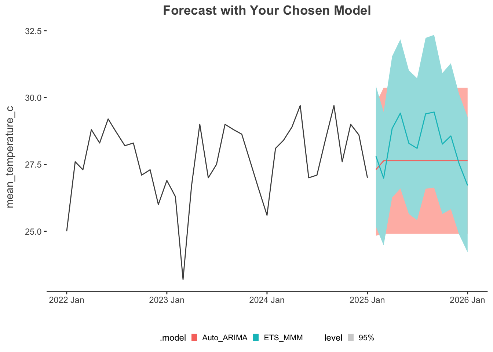
3.6.4.2 Model’s Parameter
fit_chosen_model %>%
tidy()# A tibble: 19 × 7
type .model term estimate std.error statistic p.value
<chr> <chr> <chr> <dbl> <dbl> <dbl> <dbl>
1 mean_temperature_c ETS_MMM alpha 4.26e-2 NA NA NA
2 mean_temperature_c ETS_MMM beta 1.00e-4 NA NA NA
3 mean_temperature_c ETS_MMM gamma 2.69e-4 NA NA NA
4 mean_temperature_c ETS_MMM l[0] 2.75e+1 NA NA NA
5 mean_temperature_c ETS_MMM b[0] 1.00e+0 NA NA NA
6 mean_temperature_c ETS_MMM s[0] 9.70e-1 NA NA NA
7 mean_temperature_c ETS_MMM s[-1] 1.01e+0 NA NA NA
8 mean_temperature_c ETS_MMM s[-2] 9.98e-1 NA NA NA
9 mean_temperature_c ETS_MMM s[-3] 1.04e+0 NA NA NA
10 mean_temperature_c ETS_MMM s[-4] 1.04e+0 NA NA NA
11 mean_temperature_c ETS_MMM s[-5] 9.95e-1 NA NA NA
12 mean_temperature_c ETS_MMM s[-6] 1.00e+0 NA NA NA
13 mean_temperature_c ETS_MMM s[-7] 1.04e+0 NA NA NA
14 mean_temperature_c ETS_MMM s[-8] 1.02e+0 NA NA NA
15 mean_temperature_c ETS_MMM s[-9] 9.58e-1 NA NA NA
16 mean_temperature_c ETS_MMM s[-10] 9.86e-1 NA NA NA
17 mean_temperature_c ETS_MMM s[-11] 9.40e-1 NA NA NA
18 mean_temperature_c Auto_ARIMA ma1 4.68e-1 0.176 2.67 1.13e- 2
19 mean_temperature_c Auto_ARIMA constant 2.76e+1 0.294 93.9 1.26e-453.6.5 Model Evaluation
residuals <- residuals(fit_chosen_model)
# Plot residuals
autoplot(residuals, .vars = .resid) +
labs(title = "Residuals of Chosen Model",
x = "",
y = "Residuals") +
theme_classic()+
theme(
plot.title = element_text(face = "bold", hjust = 0.5,color="#4D4D4D"),
axis.line.y = element_blank(),
axis.line.x = element_line(color = "#4D4D4D", size = 0.5),
axis.title.y = element_text(color = "#4D4D4D",margin = margin(r = 10)),
legend.position = "bottom",
legend.key = element_blank(),
legend.key.size = unit(0.2, "cm"),
legend.title = element_text(size = 9),
legend.text = element_text(size = 8)
)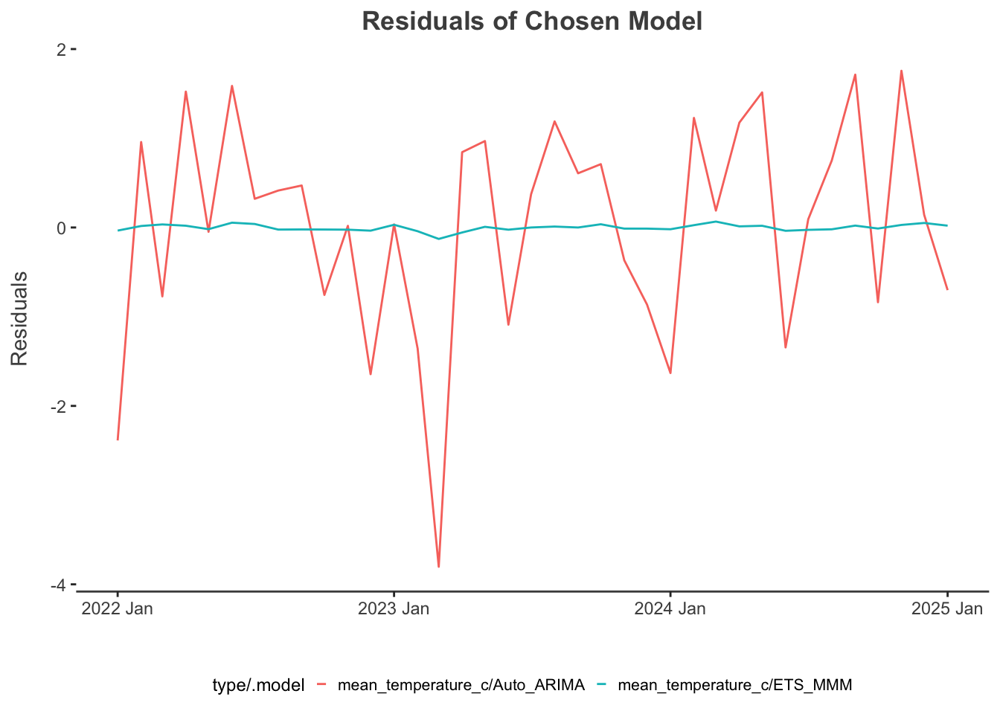
3.6.6 Create Table for forecaste value:
# Keep only relevant columns: time, model, actual value, forecasted value
comparison_table <- forecast_results %>%
select(year_month, .model, value, .mean) %>%
rename(Actual = value, `Forecast Value` = .mean)
comparison_table <- comparison_table %>%
select(year_month, .model,`Forecast Value`) %>%
rename( Model = .model)
kable(comparison_table)| year_month | Model | Forecast Value |
|---|---|---|
| 2025 Feb | ETS_MMM | 27.80634 |
| 2025 Mar | ETS_MMM | 26.98589 |
| 2025 Apr | ETS_MMM | 28.84005 |
| 2025 May | ETS_MMM | 29.41755 |
| 2025 Jun | ETS_MMM | 28.28950 |
| 2025 Jul | ETS_MMM | 28.10244 |
| 2025 Aug | ETS_MMM | 29.39029 |
| 2025 Sep | ETS_MMM | 29.45793 |
| 2025 Oct | ETS_MMM | 28.26021 |
| 2025 Nov | ETS_MMM | 28.56595 |
| 2025 Dec | ETS_MMM | 27.52841 |
| 2026 Jan | ETS_MMM | 26.71486 |
| 2025 Feb | Auto_ARIMA | 27.30692 |
| 2025 Mar | Auto_ARIMA | 27.63563 |
| 2025 Apr | Auto_ARIMA | 27.63563 |
| 2025 May | Auto_ARIMA | 27.63563 |
| 2025 Jun | Auto_ARIMA | 27.63563 |
| 2025 Jul | Auto_ARIMA | 27.63563 |
| 2025 Aug | Auto_ARIMA | 27.63563 |
| 2025 Sep | Auto_ARIMA | 27.63563 |
| 2025 Oct | Auto_ARIMA | 27.63563 |
| 2025 Nov | Auto_ARIMA | 27.63563 |
| 2025 Dec | Auto_ARIMA | 27.63563 |
| 2026 Jan | Auto_ARIMA | 27.63563 |